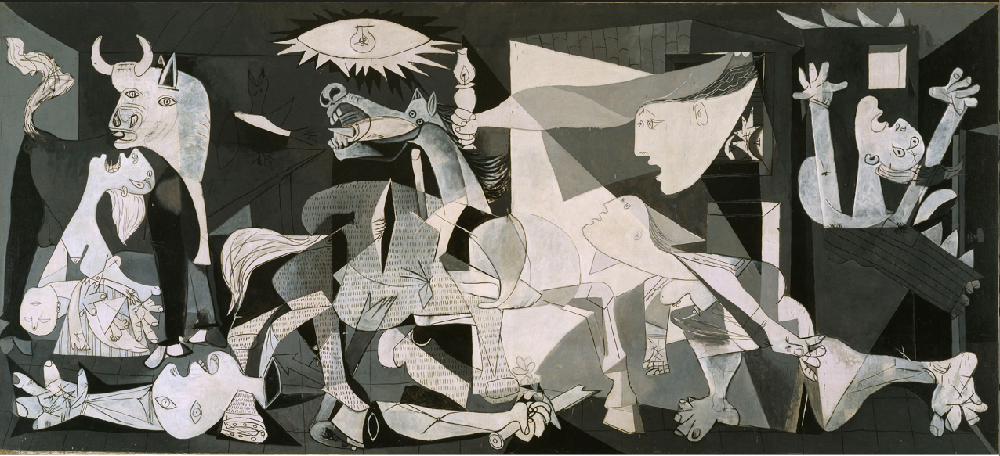

El Renacimiento llegó a España en el siglo XV, influenciado por el floreciente arte italiano, pero también adoptando características propias.
Durante este período, el arte español comenzó a mirar hacia la Antigüedad clásica, buscando inspiración en la simetría, la proporción y el
equilibrio. En la arquitectura, esto se reflejó en la construcción de palacios y catedrales con líneas más claras y menos ornamentación que
el gótico anterior. Ejemplos de ello incluyen el Palacio de Carlos V en la Alhambra y la Universidad de Salamanca, con su impresionante fachada plateresca.
En la pintura, el Renacimiento español tuvo figuras claves como El Greco. Aunque nacido en Creta y formado en Italia, El Greco desarrolló
su carrera en España, donde su estilo único, marcado por figuras alargadas y expresivas, lo convirtió en uno de los más grandes artistas de su tiempo.
Obras como "El entierro del Conde de Orgaz" muestran su habilidad para fusionar el realismo renacentista con una espiritualidad intensa y casi
mística.
Barroco
El siglo XVII vio el auge del Barroco en España, una época de gran esplendor artístico, especialmente en la pintura. Este período estuvo
marcado por un profundo realismo, un fuerte sentido del dramatismo y un uso magistral del claroscuro, una técnica que enfatiza el contraste entre
luces y sombras.
Diego Velázquez es sin duda el pintor más representativo de esta época. Su obra maestra, "Las Meninas", es una de las pinturas más estudiadas
en la historia del arte, conocida por su compleja composición y su juego de perspectivas.
Siglo XIX
El arte español del siglo XIX estuvo profundamente marcado por los cambios políticos y sociales que atravesaba el país. Fue una época de
transición entre el Neoclasicismo, el Romanticismo y el Realismo, con Francisco de Goya como la figura más importante de este siglo.
Siglo XX

El siglo XX fue una época de innovación y experimentación en el arte español, con figuras de renombre mundial que cambiaron el curso del
arte moderno. Uno de los artistas más influyentes de este siglo fue Pablo Picasso. Nacido en Málaga, Picasso fue uno de los fundadores del cubismo.
Siglo XXI
El arte español del siglo XXI ha estado marcado por la diversidad y la globalización, con artistas que exploran nuevas tecnologías, formas de expresión y
medios digitales. En este siglo, artistas como Miquel Barceló han continuado siendo referentes internacionales.
.jpg)
.jpg)
.jpg)
.jpg)